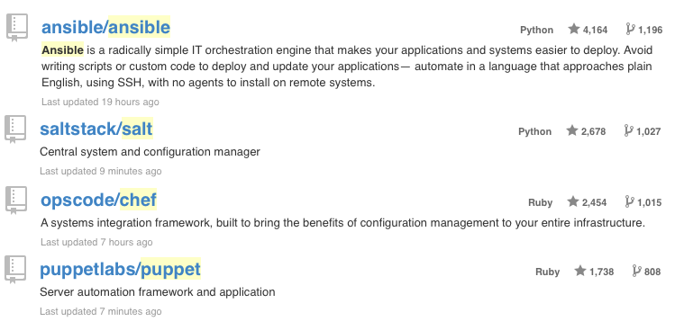
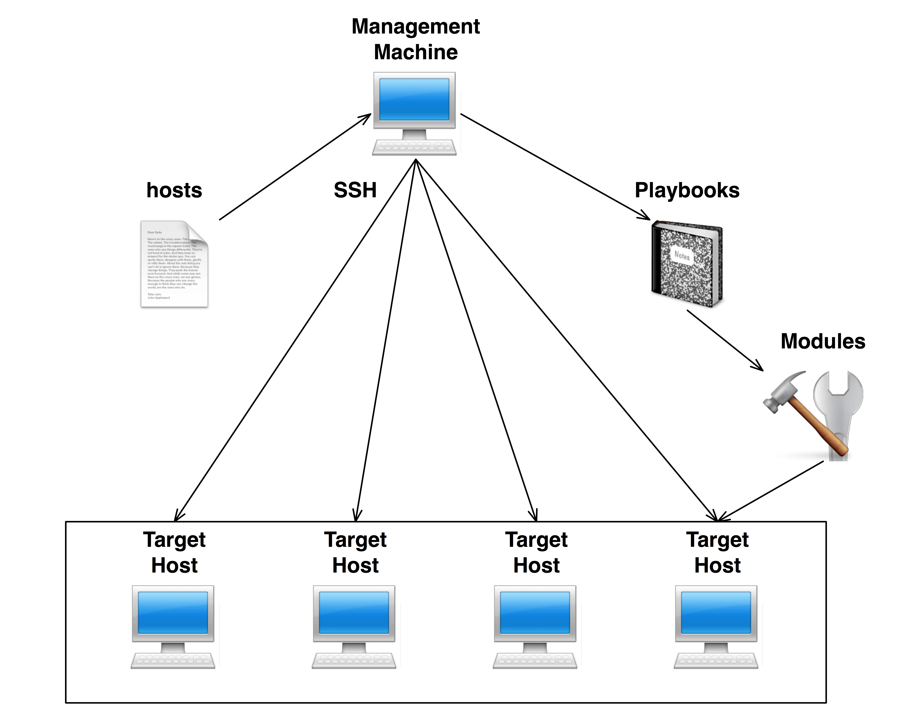
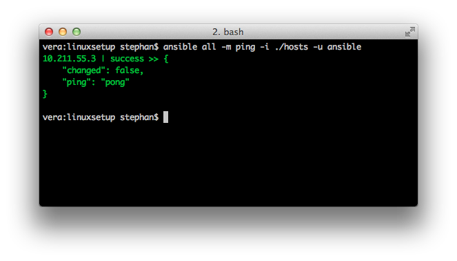
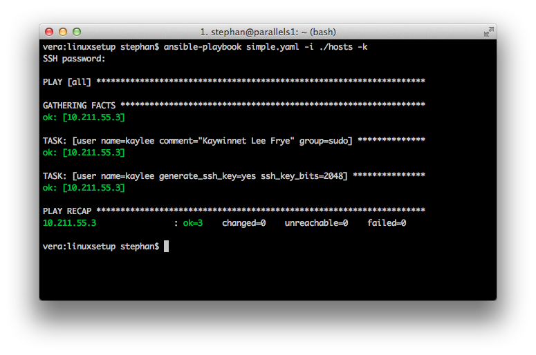
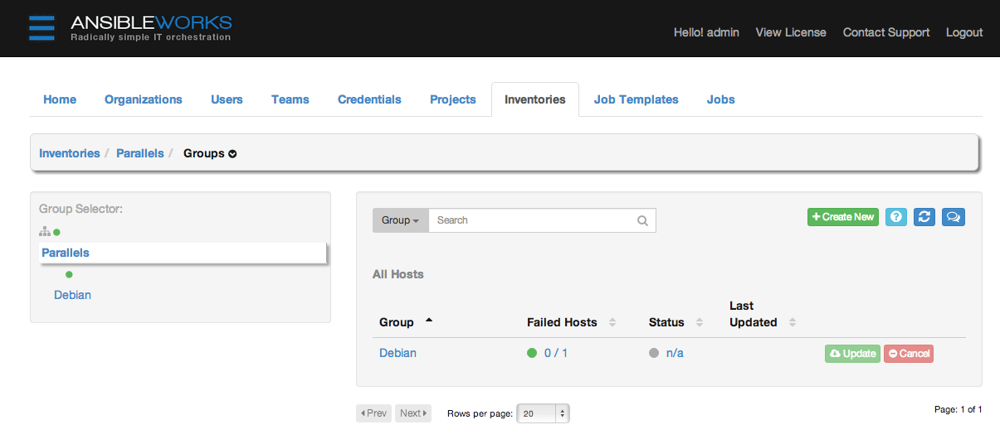

Infrastruktur mit Ansible

Wie sieht eure IT-Infrastruktur aus?
- Wer hat einen eigenen (Web-)Server?
- Welches Betriebssystem?
- Wie viele Server sind es?
- Wie oft setzt ihr sie neu auf?
- Wie lange dauert das Aufsetzen?
- Wer hat schonmal ein Tutorial verfasst?
Mein Leben vor Ansible
- Grundsystem per Hand installieren
- Ggf. ausgefeilte shell-Skripte für Pakete ausführen
- Manuelles Anpassen von Konfigurationsdateien
- Fertiges System
- Ausprobieren von neuer Software/Konfiguration,
andere Entwickler auf dem Server/Tests - Zerschießen des funktionierenden Systems
Geeks sind Gewinnertypen

Vorteile von Automatisierung
- Beliebige (und leichte) Wiederholbarkeit
- Hohe Geschwindigkeit von Deployments
- Wiederherstellen von bekannten Zuständen
- Keine tiefen Systemkenntnisse notwendig
Wieso nicht Shell/Perl-Skripte?
- Skripte werden schnell extrem komplex
- Idempotenz - Unabhängig vom Ausgangszustand wird ein definierter Endzustand hergestellt
(mehrfache Ausführung möglich) - Bessere Übersichtlichkeit und Struktur durch Abstraktion
- Portabilität (z.B. verschiedene Linux Distros)
- Deklarativer Ansatz erlaubt höhere Produktivität als imperatives Vorgehen
(wie soll das Ergebnis aussehen vs. was soll getan werden) - Teilen von Playbooks mit Community
Configuration Management 2014

Stand: 13. Januar 2014 auf github
- Leistungsfähige automation engine aus Basis von Playbooks
- Keine Agents auf Zielsystemen notwendig
(SSH-Zugriff reicht) - Standardmäßig push-Architektur, pull möglich
- Keine Programmierkenntnisse notwendig
(statt dessen YAML und Jinja2) - Aber funktional erweiterbar in beliebigen Programmiersprachen
- Kein Management von Windows oder Mac OS X
- Integration in Amazon EC2, Rackspace, OpenStack, VMWare, Vagrant, u.a.
- AWX (Web-GUI)
Architekturüberblick

Kernbestandteile von Ansible
- Inventory - Beschreibt die Infrastruktur
- Module - Stellen Funktionen zur Verfügung
- Playbooks - Führen Aktionen in Infrastruktur durch
Inventory
- Hosts - Zielsysteme (Linux)
- Gruppen Organisatorische Zuordnung (z.B. geografisch, nach Funktion oder als Mischung)
Beispiel Hosts-Datei
[webserver]
apache.example.org
lamp.example.org
[dbserver]
db.example.org
lamp.example.org
[test]
lamp.example.org
[production]
apache.example.org
db.example.org
INI-Format
Es gibt Module für
| Monitoring | Net Infrastructure | Network |
| Notification | Packaging | Source Control |
| System | Utilities | Web Infrastructure |
| Cloud | Commands | Database |
| Files | Internal | Inventory |
| Messaging |
System: ping

Eigene Module
Eigene Module können in Python oder einer beliebigen anderen Programmiersprache(!) verfasst sein.
Playbooks
- Playbooks sind deklarative Beschreibungen in YAML
(Leerzeichen sind wichtig!) - Tasks beschreiben den gewünschten Zustand
- Können Variablen und Schleifen verwenden
- Templates und Dateien lassen sich nutzen
Playbooks
---
- hosts: all
user: root
tasks:
# Add the user 'kaylee' with a primary group of 'admin'
- user: name=kaylee comment="Kaywinnet Lee Frye" group=user
# Create a 2048-bit SSH key for user kaylee
- user: name=kaylee generate_ssh_key=yes ssh_key_bits=2048
# Remove the user 'kaylee'
- user: name=kaylee state=absent remove=yes
Play it!

Variablen für Tasks
Tasks können Variablen nutzen
---
- hosts: all
user: root
vars:
user: stephan
user_password: $1$$$UMYDU6b06auQqgJWoSx2.1
tasks:
- name: "Init | Set up an account"
user: name={{ user }} password={{ user_password }} shell=/bin/bash
Schleifen mit item
tasks:
- name: "Init | Some software should be installed"
action: apt pkg={{ item }} state=latest
with_items:
- sudo
- openssh-server
- sshTemplates und Dateien
- Das Template-Modul erlaubt dynamische Anpassungen an Konfig-Dateien
- Mit Copy lassen sich Dateien 1:1 kopieren
template: src=templates/msmtprc.j2 dest=/etc/msmtprc
copy: src=templates/backup.sh dest=/usr/local/bin/backup.shVariablen in Templates
- Jinja2 als Template-Sprache
[client]
user=root
password={{ mysql.root_password }}
my.cnf.j2
Handlers
- Verhalten sich ähnlich zu Tasks
handlers:
- name: restart mysql
action: service name=mysql state=restartedTags und Roles
- Tags bündeln Tasks und lassen sich gezielt ausführen
- Roles erlauben
tasks:
- name: LAMP should be installed
action: apt pkg={{ item }} state=latest
with_items:
- apache2
- mysql
- php5
tags: lampAnsible installieren
Mac OS X
$ brew install ansibleLinux
$ pip install pyyaml jinja2 paramiko
$ pip install ansibleBei Bedarf auch mit GUI

Bis zu 10 Hosts lassen sich kostenlos mit AWX managen.
Alternativen
Es gibt eine Vielzahl von Tools für
automatisiertes Configuration Management:
Weitere Ressourcen
Automate all the things
Fork me!
Ich blogge unter yauh.de,
tweete als @yauh,
+1 als StephanHochhaus
und pushe als perlmonkey.